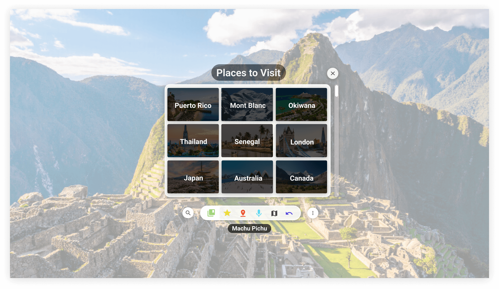
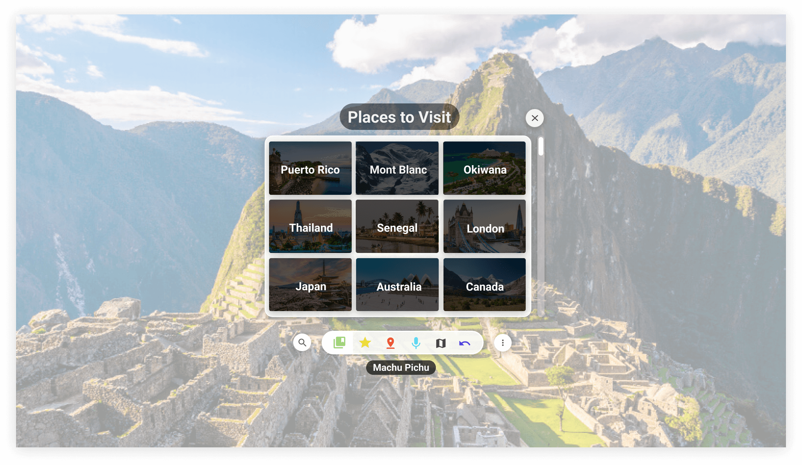

IDM 311: Homework 01
WANDER - VR Interface Redesign
Wander is an exploration-based experience that allows you to teleport anywhere in the world using Google Street View. With Wander you are able to historically jump to the past and also learn about different locations using Wikipedia integration.
WebGL / Quest 2 (1920x1080)
I redesigned this interface based off one of the main flows of the VR experience, which was selecting where the user would like to travel to. I thought the orginal interface was a little smaller and not as aesthetically pleasing, so my focus was to make some of the features bigger and put the most necessary buttons near the focal point of the screen. The challenge was to allow the user to have easy access to these settings without it getting in the way of their view, and to clean up the interface without getting rid of important features. The two images for each screen size represents what the screen would look like when the menu is closed and when it is opened.
 

Google Cardboard - Mobile (812x457)